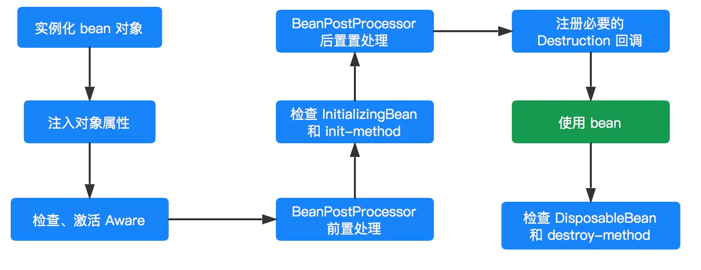
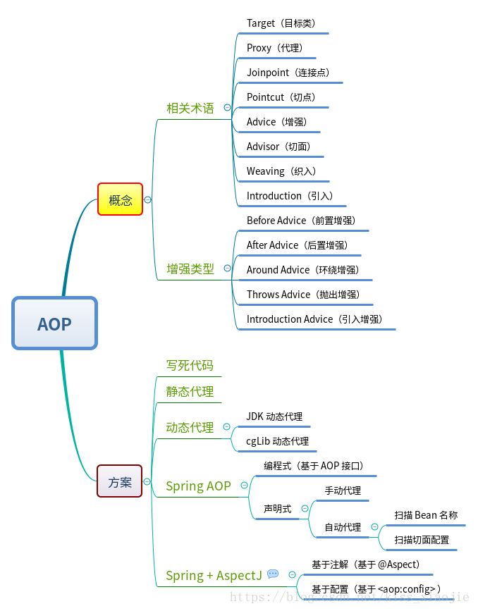
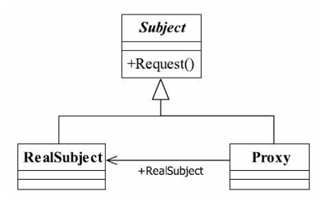

Spring IOC和AOP的原理及相关面试题
1.什么是IOC和DI?有什么区别？
控制反转(Ioc)：它不是技术，而是一种思想，将创建对象的控制权力交给spring框架。由Spring来负责控制对象的生命周期和对象间的关系，其核心是通过反射调用set方法来进行数据的注入。
依赖注入(DI)：指Spring创建对象的过程中，将对象依赖的属性（简单值，集合，对象）通过配置的方式进行设值。
IoC和DI其实是同一个概念的不同角度描述，DI相对IoC而言，明确描述了被管理的对象中，依赖的属性也应该由Spring容器自动注入
2.IOC容器的初始化过程?
(1).BeanDefinition的Resource定位
Resource，对资源的抽象，它的每一个实现类都代表了一种资源的访问策略，如ClasspathResource 、 URLResource ，FileSystemResource 等。
(2).BeanDefinition的载入
(3).向IoC容器注册BeanDefinition
IOC容器的初始化过程，一般不包含bean的依赖注入的实现，在spring IOC设计中，bean的注册和依赖注入是两个过程，，依赖注入一般发生在应用第一次索取bean的时候，但是也可以在xm中配置，在容器初始化的时候，这个bean就完成了初始化。
3.bean如何创建？
(1)xml文件
(2)Spring4.x的javaConfig方式
// 创建一个类，命名为SpringConfiguration
@Configuration
public class SpringConfiguration {
@Bean
@Scope(value = "singleton")
public Student student(){
return new Student(11,"jack",22);
}
} 4.注入方式有哪几种？
构造方法注入
setter注入
基于注解注入（常用）
5.springIOC bean的生命周期？

1.实例化 Instantiation InstantiationAwareBeanPostProcessor
2.属性赋值 Populate
3.初始化 Initialization BeanPostProcessor
4.销毁 Destruction
在配置bean时，通过init-method和destroy-method 属性为bean指定初始化和销毁方法
6.常用的扩展接口
(1).Aware 接口为 Spring 容器的核心接口，是一个具有标识作用的超级接口，实现了该接口的 bean 是具有被 Spring 容器通知的能力，通知的方式是采用回调的方式。
** BeanNameAware：对该 bean 对象定义的 beanName 设置到当前对象实例中
** BeanClassLoaderAware：将当前 bean 对象相应的 ClassLoader 注入到当前对象实例中
** BeanFactoryAware：BeanFactory 容器会将自身注入到当前对象实例中，这样当前对象就会拥有一个 BeanFactory 容器的引用。
** LoadTimeWeaverAware：加载Spring Bean时织入第三方模块，如AspectJ
** BootstrapContextAware：资源适配器BootstrapContext，如JCA,CCI
** ResourceLoaderAware：底层访问资源的加载器
** PortletConfigAware：PortletConfig
** PortletContextAware：PortletContext
** ServletConfigAware：ServletConfig
** ServletContextAware：ServletContext
** MessageSourceAware：国际化
** ApplicationEventPublisherAware：应用事件
** NotificationPublisherAware：JMX通知
(2).BeanPostProcessor
初始化第二个阶段则是 BeanPostProcessor 增强处理，在该阶段 BeanPostProcessor 会处理当前容器内所有符合条件的实例化后的 bean 对象。
它主要是对 Spring 容器提供的 bean 实例对象进行有效的扩展，允许 Spring 在初始化 bean 阶段对其进行定制化修改，如处理标记接口或者为其提供代理实现。
(3).InitializingBean 和 init-method
InitializingBean 是一个接口，它为 Spring Bean 的初始化提供了一种方式，它有一个 afterPropertiesSet() 方法，
在 bean 的初始化进程中会判断当前 bean 是否实现了 InitializingBean，如果实现了则调用 afterPropertiesSet() 进行初始化工作。然后再检查是否也指定了 init-method()，如果指定了则通过反射机制调用指定的 init-method()。
(4).DisposableBean 和 destroy-method
与 InitializingBean 和 init-method 用于对象的自定义初始化工作相似，DisposableBean和 destroy-method 则用于对象的自定义销毁工作。
当一个 bean 对象经历了实例化、设置属性、初始化阶段,那么该 bean 对象就可以供容器使用了（调用的过程）。
当完成调用后，如果是 singleton 类型的 bean ，则会看当前 bean 是否应实现了 DisposableBean 接口或者配置了 destroy-method 属性，如果是的话，则会为该实例注册一个用于对象销毁的回调方法，便于在这些 singleton 类型的 bean 对象销毁之前执行销毁逻辑。
但是，并不是对象完成调用后就会立刻执行销毁方法，因为这个时候 Spring 容器还处于运行阶段，只有当 Spring 容器关闭的时候才会去调用。但是， Spring 容器不会这么聪明会自动去调用这些销毁方法，而是需要我们主动去告知 Spring 容器。
对于 BeanFactory 容器而言，我们需要主动调用 destroySingletons() 通知 BeanFactory 容器去执行相应的销毁方法。
对于 ApplicationContext 容器而言调用 registerShutdownHook() 方法。
7.数据是如何注入的？
其核心是通过反射进行数据的注入
8.BeanFactory和FactoryBean的区别？
(1)都是接口
(2)BeanFactory是一个工厂类，用于管理Bean的一个工厂，在Spring中所有的Bean都是由BeanFactory（就是IOC容器）管理。
FactoryBean这个Bean不是简单的Bean，而是一个能生产或者修饰对象生成的工厂Bean,它的实现与设计模式中的工厂模式和修饰器模式类似。
一般情况下，Spring通过反射机制利用
如果按照传统的方式，则需要在
Spring为此提供了一个org.springframework.bean.factory.FactoryBean的工厂类接口，用户可以通过实现该接口定制实例化Bean的逻辑。
FactoryBean接口对于Spring框架来说占用重要的地位，Spring自身就提供了70多个FactoryBean的实现。
它们隐藏了实例化一些复杂Bean的细节，给上层应用带来了便利。从Spring3.0开始，FactoryBean开始支持泛型，即接口声明改为FactoryBean
利用反射
9.Bean生命周期中循环依赖如何解决？
10.什么是AOP?
面向切面编程，通过预编译方式和运行期动态代理实现程序功能的统一维护的一种技术，
可以在正常的业务逻辑中进行横切，从而使得业务逻辑的各部分之间的耦合度降低，提高程序的可重用性，提高开发效率。

(1)Aspect 切面 通常是一个类，里面可以定义切入点和通知
(2)Join point 程序执行过程中明确的点，一般是方法的调用。被拦截到的点，因为Spring只支持方法类型的连接点，所以在Spring中连接点指的就是被拦截到的方法，实际上连接点还可以是字段或者构造器
(3)Advice AOP在特定的切入点上执行的增强处理，
before(前置)
after(后置)
afterReturning(最终)
afterThrowing(异常)
around(环绕)
(4)Pointcut 就是带有通知的连接点，在程序中主要体现为书写切入点表达式
(5)weave 将切面应用到目标对象并导致代理对象创建的过程
(6)introduction 在不修改代码的前提下，引入可以在运行期为类动态地添加一些方法或字段
(7)ProxyAOP框架创建的对象，代理就是目标对象的加强。Spring中的AOP代理可以使JDK动态代理，也可以是CGLIB代理，前者基于接口，后者基于子类
(8)Target 包含连接点的对象。也被称作被通知或被代理对象。
11.Spring AOP是基于那种设计模式？
代理模式
12.什么是代理模式？
给某个对象提供一个代理对象，并且有代理对象控制对原对象的引用
Subject：抽象主题角色。可以是抽象类也可以是接口，是一个最普通的业务类型定义。
RealSubject：具体主题角色，也就是被代理的对象，是业务逻辑的具体执行者。
Proxy：代理主题角色。负责读具体主题角色的引用，通过真实角色的业务逻辑方法来实现抽象方法，并在前后可以附加自己的操作。

13.静态代理和动态代理有什么区别？
静态代理：由程序员创建或由特定工具自bai动生成源代码du，再对其编译。在程序运行前，代理类的.class文件就已经存在了。动态代理类：在程序运行时，运用反射机制动态创建而成。
缺点：
(1)代理类和委托类实现了相同的接口，代理类通过委托类实现了相同的方法。这样就出现了大量的代码重复。如果接口增加一个方法，除了所有实现类需要实现这个方法外，所有代理类也需要实现此方法。增加了代码维护的复杂度。
(2)代理对象只服务于一种类型的对象，如果要服务多类型的对象。势必要为每一种对象都进行代理，静态代理在程序规模稍大时就无法胜任了。如上的代码是只为UserManager类的访问提供了代理，但是如果还要为其他类如Department类提供代理的话，就需要我们再次添加代理Department的代理类。
动态代理：与静态代理类对照的是动态代理类，动态代理类的字节码在程序运行时由Java反射机制动态生成，无需程序员手工编写它的源代码。动态代理类不仅简化了编程工作，而且提高了软件系统的可扩展性，因为Java 反射机制可以生成任意类型的动态代理类。java.lang.reflect 包中的Proxy类和InvocationHandler 接口提供了生成动态代理类的能力。
(1)getProxyClass()静态方法负责创建动态代理类
(2)newProxyInstance()静态方法负责创建动态代理类的实例
由Proxy类的静态方法创建的动态代理类具有以下特点:
动态代理类是public、final和非抽象类型的;
动态代理类继承了java.lang.reflect.Proxy类;
动态代理类的名字以”$Proxy”开头;
动态代理类实现getProxyClass()和newProxyInstance()方法中参数interfaces指定的所有接口;
14.Spring AOP的实现原理?
动态代理又分为:
(1)JDK动态代理
(2)CGLIB 动态代理
Spring AOP动态代理的两种模式都使用了，其核心代码实现如下：
public class DefaultAopProxyFactory implements AopProxyFactory, Serializable {
public DefaultAopProxyFactory() {
}
public AopProxy createAopProxy(AdvisedSupport config) throws AopConfigException {
//此处判断目标类是否不需要对代理策略进行优化 目标类是否Proxy类型以及目标类是否是接口 则使用JDK动态代理
if (!config.isOptimize() && !config.isProxyTargetClass() && !this.hasNoUserSuppliedProxyInterfaces(config)) {
return new JdkDynamicAopProxy(config);
} else {
Class<?> targetClass = config.getTargetClass();
if (targetClass == null) {
throw new AopConfigException("TargetSource cannot determine target class: Either an interface or a target is required for proxy creation.");
} else {
//如果不是接口并且不是Proxy类型则使用CGLIB动态代理，否则是否JDK动态代理
return (AopProxy)(!targetClass.isInterface() && !Proxy.isProxyClass(targetClass) ? new ObjenesisCglibAopProxy(config) : new JdkDynamicAopProxy(config));
}
}
}
private boolean hasNoUserSuppliedProxyInterfaces(AdvisedSupport config) {
Class<?>[] ifcs = config.getProxiedInterfaces();
return ifcs.length == 0 || ifcs.length == 1 && SpringProxy.class.isAssignableFrom(ifcs[0]);
}
}12.AOP应用场景?
Authentication 权限
Caching 缓存
Context passing 内容传递
Error handling 错误处理
Lazy loading 懒加载
Debugging 调试
logging, tracing, profiling and monitoring 记录跟踪 优化 校准
Performance optimization 性能优化
Persistence 持久化
Resource pooling 资源池
Synchronization 同步
Transactions 事务